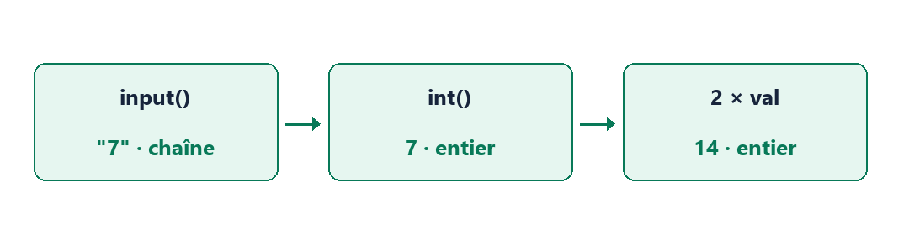

Comprendre le cours
1. Faire évoluer les valeurs d’un programme
Une instruction demande une action. Une expression calcule une valeur. Dans val = 2 * val, Python évalue d’abord l’expression à droite, puis associe le nouveau résultat au nom val. Si val vaut 7 avant cette ligne, il vaut 14 après. Pour suivre un programme, écris la valeur avant et après chaque affectation.
| Instruction | État de val |
|---|---|
val = 7 | 7 |
val = 2 * val | 14 |
print(val) | 14, avec un affichage dans le terminal |
Le type indique les opérations possibles. 7 est un entier, 7.0 un flottant, "7" un texte et True un booléen. = change la valeur associée à un nom. == compare deux valeurs et produit un booléen.
2. Lire une saisie, calculer et afficher
input() renvoie toujours une chaîne. Si tu veux calculer avec un entier, convertis avec int(). Pour un réel saisi avec un point décimal, utilise float(). Une saisie incompatible avec le format de conversion provoque une ValueError. Dans les TD, on peut commencer par suivre la convention de saisie donnée par le sujet.

"7", la multiplication par 2 produirait "77".Pour les opérations, / donne un quotient réel, // donne le quotient entier arrondi vers le bas et % donne le reste cohérent avec ce quotient. Ainsi 17 == (17 // 5) * 5 + (17 % 5). ** calcule une puissance. Pour afficher proprement, une chaîne formatée comme f"{a} + {b} = {a+b}" insère les valeurs et le calcul aux endroits indiqués.
3. Tester une condition avant de choisir une branche
and exige que les deux conditions soient vraies. or en exige au moins une. not inverse la valeur logique. 0 <= n < 20 vérifie les deux bornes avec une seule expression. Sur une plage, écris toujours si chaque borne est incluse.
Python évalue and et or de gauche à droite. Dans b == 0 or a // b > 5, quand b vaut zéro, la première partie suffit. Python ne tente donc aucune division. Cet arrêt dès que la décision est connue s’appelle le court-circuit.
if exécute un bloc seulement si son test réussit. elif essaie une autre condition quand les précédentes échouent. else prend le cas restant. Un bloc correspond aux lignes décalées du même niveau. Deux if successifs peuvent tous deux s’exécuter et le second lit les valeurs déjà modifiées par le premier.
4. Manipuler des chaînes de caractères
Une chaîne est une suite ordonnée de caractères. s[0] lit le premier caractère si la chaîne est non vide. s[-1] lit le dernier. s[1:4] prend les indices 1, 2 et 3. len(s) compte les caractères de la chaîne et + colle deux textes.
Les méthodes .lower() et .upper() renvoient de nouvelles chaînes. Pour interpréter " Français ", langue.strip().lower() enlève les blancs aux extrémités et uniformise la casse. Pour tester une seule voyelle majuscule, demande à la fois len(y) == 1 et y in "AEIOUY". La condition sur la longueur évite d’accepter la chaîne vide ou une sous-chaîne de plusieurs lettres.
Du cours aux TD et TP
Les deux supports retrouvés portent sur les bases du semestre. Les boucles, fonctions et structures de données avancées demandent leurs supports pour être développées au même niveau.
Questions TD & TP
TD1, ex. 1 et 3 · Doubler un entier et calculer avec deux réels
Énoncé. Lire un entier dans val, doubler sa valeur, puis l’afficher. Dans l’exercice 3, lire deux réels et afficher leur somme et leur produit.
val = int(input("Entier ? "))
val = 2 * val
print(val)Avec 7, la sortie est 14. Si tu enlèves int(), val contient la chaîne "7". 2 * val répète cette chaîne. Pour l’exercice 3, lis x et y avec float(). Avec 3.25 et 7, contrôle x + y = 10.25 et x * y = 22.75.
TD1, ex. 2, 7 à 9 · Mettre en forme le damier et les résultats
Énoncé. Saisir A et B, afficher le damier A–B–A puis B–A–B puis A–B–A, et produire une ligne de la forme A-B-A-B!.
print(a, b, a)
print(b, a, b)
print(a, b, a)
print(a, b, a, b, sep="-", end="!\n")Chaque print termine sa ligne. Pour coller le point d’exclamation au dernier nombre, utilise end. Dans les trois exercices de calcul, identifie l’opération à partir des unités et de l’énoncé. heures_par_semaine * semaines donne des heures, longueur * largeur donne une aire et 2 ** n calcule la puissance. Avec 3, le dernier résultat vaut 8.
TD2, ex. 1 et 2 · Compter les cas et éviter la division par zéro
Énoncé. Déterminer les entiers qui vérifient A >= 3 and A < 5 et A >= 3 or A < 5. Tester ensuite si le quotient entier de a par b dépasse 5 ou si b vaut 0.
- Avec
and, l’entier doit satisfaire les deux inégalités. Il reste 3 et 4. Avecor, tout entier inférieur à 3 satisfait la deuxième condition et tout entier supérieur ou égal à 3 satisfait la première. Tous les entiers passent. - Écris
b == 0 or a // b > 5. Essaiea=20,b=0pour vérifier l’absence d’erreur, puisa=20,b=4pour vérifier que 5 est exclu, et enfina=20,b=3pour vérifier le cas vrai. - Pour « exactement un entier impair », calcule le nombre de conditions vraies.
sum((a % 2 != 0, b % 2 != 0, c % 2 != 0)) == 1compte les trois booléens. Une écriture avecorseul exprimerait « au moins un ».
TD2, ex. 4, 6 et 9 · Choisir entre if, elif et plusieurs if
Énoncé. Comparer un programme qui fait 3*n+1 si n est impair et n//2 sinon à un programme qui effectue deux if successifs. Écrire ensuite la condition pour une année bissextile.
- Avec n=3, le premier test réussit. La nouvelle valeur est 10. Dans le programme avec
else, la branche de division est écartée et la sortie est 10. Dans celui avec le secondif, ce dernier lit 10, constate que la valeur est paire et la divise. La sortie est 5. - Pour l’année bissextile, utilise
annee % 400 == 0 or (annee % 4 == 0 and annee % 100 != 0). 1900 échoue, 2000 réussit, 2024 réussit et 2023 échoue. Ces quatre tests couvrent les règles et leurs exceptions. - Dans l’exercice 9, valide d’abord
1 <= n <= 100. Pour le premier diviseur, teste 2 puis 3 jusqu’à 6 dans une chaîneif/elif. Pour tous les diviseurs, écris desifindépendants. Pour 12, les sorties sont respectivement 2 et la suite 2, 3, 4, 6.
TD2, ex. 5 et 7 · Comparer une langue et valider un caractère
Énoncé. Choisir la salutation selon la langue et déterminer si x est une lettre minuscule et si y est la même en majuscule.
Normalise d’abord la langue. Teste langue == "français", puis langue == "anglais" dans un elif et traite les autres saisies par else. Pour l’alphabet latin non accentué, teste len(x) == 1 and "a" <= x <= "z" and y == x.upper(). Vérifie ("b","B"), ("b","b") et ("","") avant de conclure.
TD2, ex. 8 · Décomposer 93 901 secondes
Énoncé. Convertir le nombre de secondes en jours, heures, minutes et secondes, en omettant les quantités nulles et en accordant les unités.
total = int(input("Donner un nombre de secondes : "))
jours, reste = divmod(total, 86_400)
heures, reste = divmod(reste, 3_600)
minutes, secondes = divmod(reste, 60)divmod(x,y) renvoie le quotient entier et le reste ensemble. Après un jour, il reste 7501 secondes. Après deux heures, il reste 301 secondes. Après cinq minutes, il reste 1 seconde. Pour l’affichage, ajoute une unité seulement si la quantité est positive. Dans ce cas, écris le mot au singulier si elle vaut 1 et au pluriel sinon. Avec 93 900, tu obtiens « 1 jour, 2 heures, 5 minutes ».